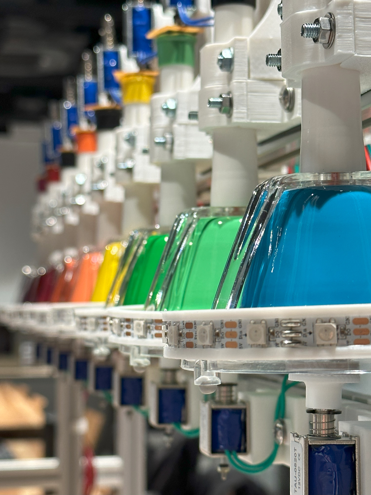
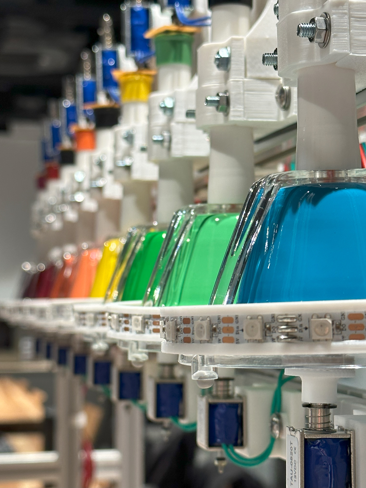

ハンドベル自動演奏システム5号機

本システム5号機では、より正確なハンドベル演奏が可能になりました。
以前の4号機では、ハンドベルを鳴らす際に音にムラが発生したり、不良が発生していたことが課題でした。 5号機では、ハンドベルに内蔵しているグロッケンとバネを、新たに準備したソレノイドとフェルト付きの部品で揺れを和らげる仕組みを実装しました。 本仕組みの導入により、ハンドベルの自動演奏時に連打されるシーンや複雑な演奏であっても、完全な音を鳴らすことが可能になっています。 本仕組みは、「ハンドベル応答速度実験機」を使用して開発し、同機構をハンドベル自動演奏システムに反映しました。

 
